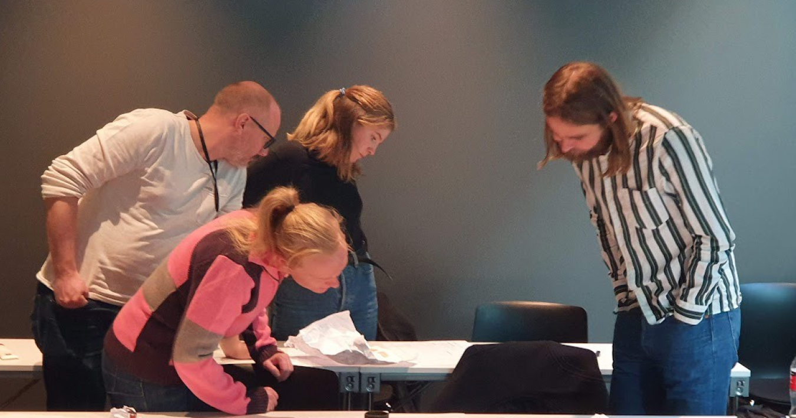
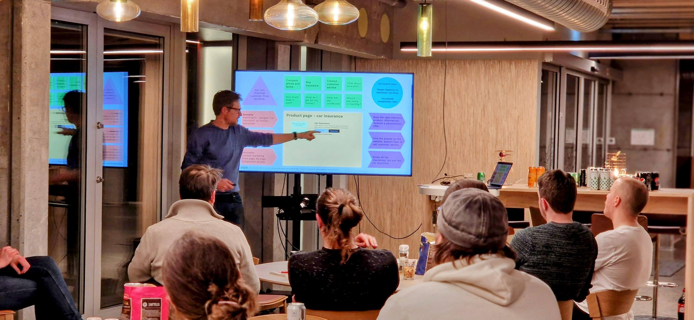
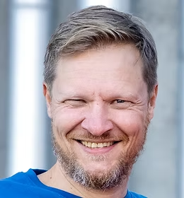

Kjernemodellen
Are Gjertin Urkegjerde Halland · kjernekaren.no
kjernemodellen.no
Kva er
kjernemodellen?
01
Kurskatalog
Masterclass i strategisk innhaldsdesign
To dagar i Oslo, med sertifisering
Neste kull 23.–24. oktober
Skriv med KI, for KI og menneske
Smidig brukertesting for produktteam
kjernekaren.no/kurs
Erfaringsgrunnlaget
25 år
med digital strategi og design
1000+
testpersonar i reelle prosjekt
2021
boka kom ut på Kraft forlag

Kjerneverkstad med heile teamet
Start med det viktigaste
Kjernemodellen gjer prioritering til ein felles øving, ikkje ein diskusjon om smak.


Are Gjertin
Urkegjerde Halland
Opphavsmannen bak kjernemodellen. Kurshaldar, fasilitator og uavhengig rådgjevar.
908 70 026 · are@kjernekaren.no